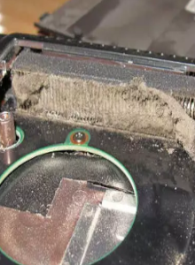

Clean computer to the basics
In exceptional times, computers are used outside of work, study and entertainment. Therefore, it is extremely important to take care of their operation, and one of the most important factors to pay attention to is their cleaning and maintenance. This article will tell you what tools you need to get the most out of your laptop or desktop.
Computer vacuum cleaner
Let's start with the base, i.e. the vacuum cleaner. Using a vacuum cleaner to clean the inside of your computer is one of the most effective ways to remove dirt and dust from the inside of the case. However, remember not to use a regular vacuum cleaner to clean the inside of your computer as it is dangerous and has the potential for successful damage. Instead, use a special computer vacuum cleaner. Thanks to this, you will avoid the risk of damaging sensitive internal components.
Brushes
Another tool that is worth having for cleaning your computer is brushes. They are very useful for removing dust and dirt from hard-to-reach places in the case, such as corners and nooks. When buying brushes, choose models with soft bristles to avoid scratching the surface.
Antistatic wipes
To clean the screen and computer surface, it is worth using special antistatic tracks that will allow you to remove fingerprints and dirt without the risk of static electricity. Their use will keep the device clean, which will affect its stability and longevity.
Thermally conductive pastes
Another important tool that we should have in our computer maintenance kit is thermal paste. Its task is to ensure proper heat conduction between the processor and the cooler, which is crucial to ensure the appropriate operating temperature. Instead of using paste in a tube, it is worth choosing special refills and ready-made sets to avoid errors in dosing and application.
Cleaning agents
The last but not least important tool for cleaning and maintaining your computer are special cleaning agents. Various preparations are available for sale that will help remove dirt and stains from various surfaces. Remember that before using the agent, you must check whether it is suitable for the type of surface, so as not to damage the equipment.
Summary
In conclusion, there are a few rules to keep in mind when choosing tools to clean and maintain your computer. First, only use specialized tools to clean inside your computer. Secondly, choose brushes with soft, fine bristles to avoid scratching and anti-static cloths to avoid static electricity. Third, always make sure the cleaners you use are right for your computer.
I hope I helped, and if you have any questions, you can find my e-mail on the "Home" page.